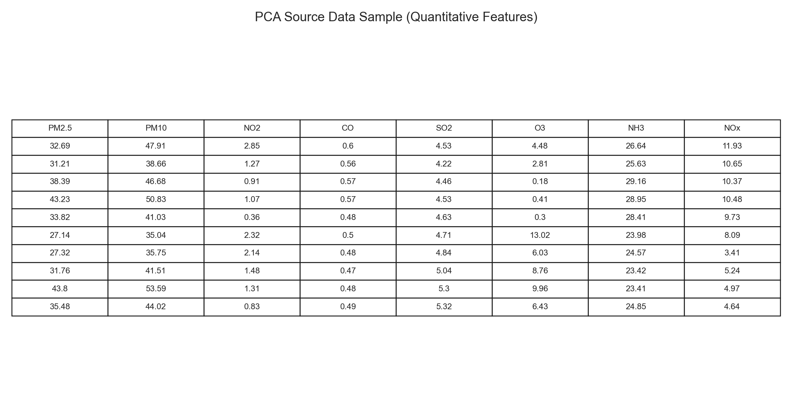
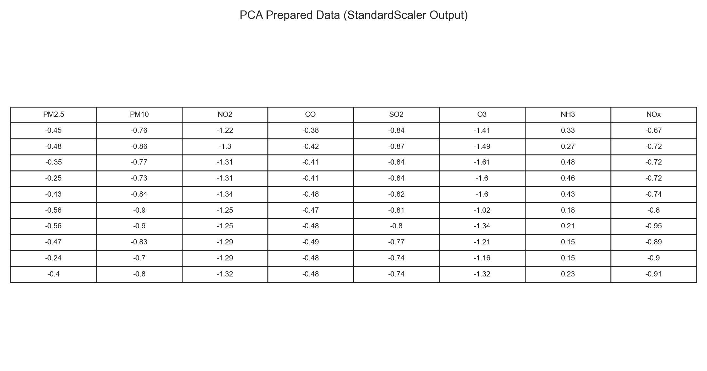
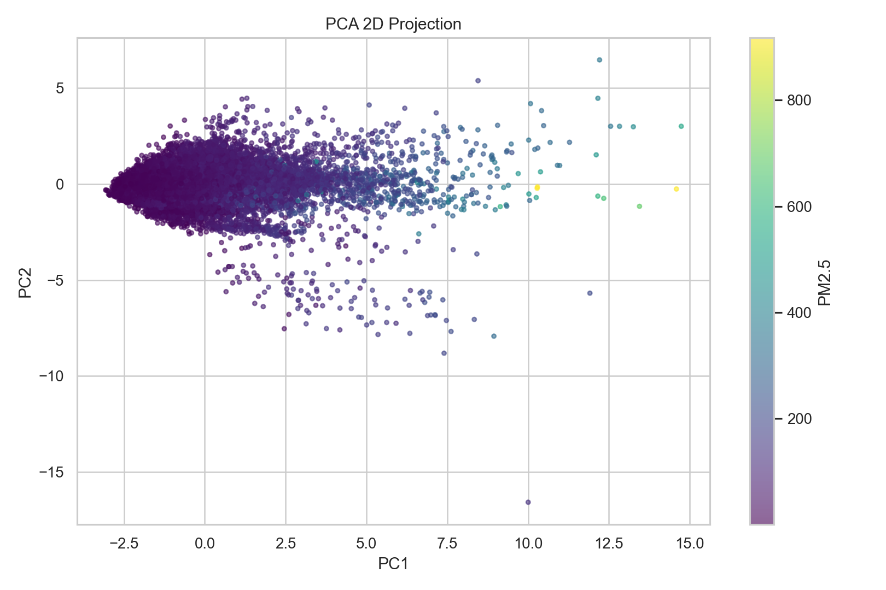
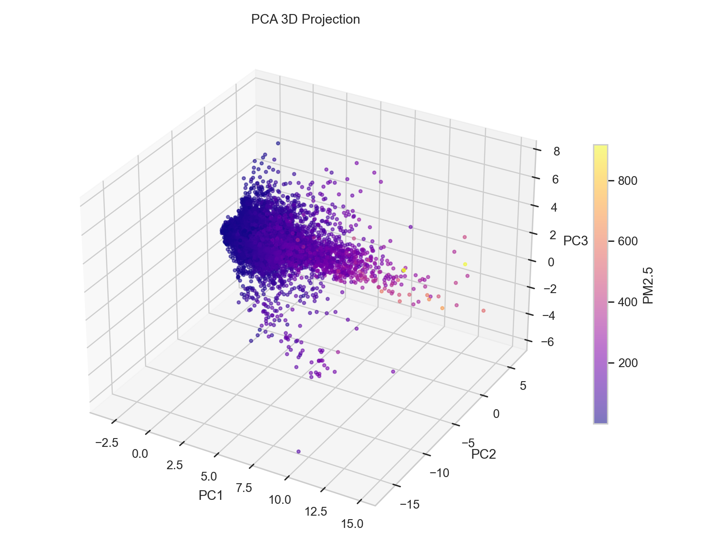
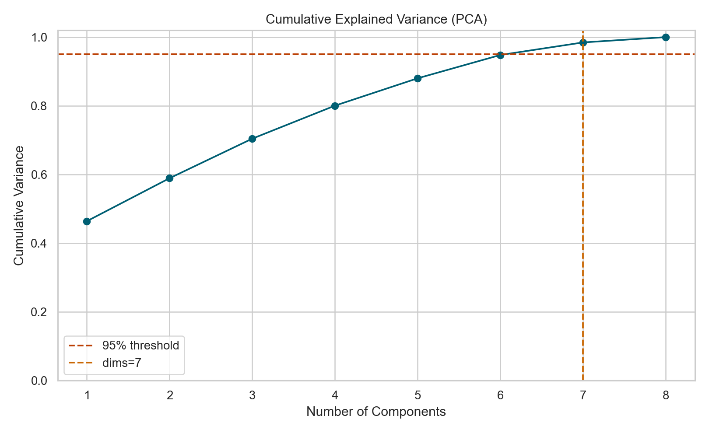
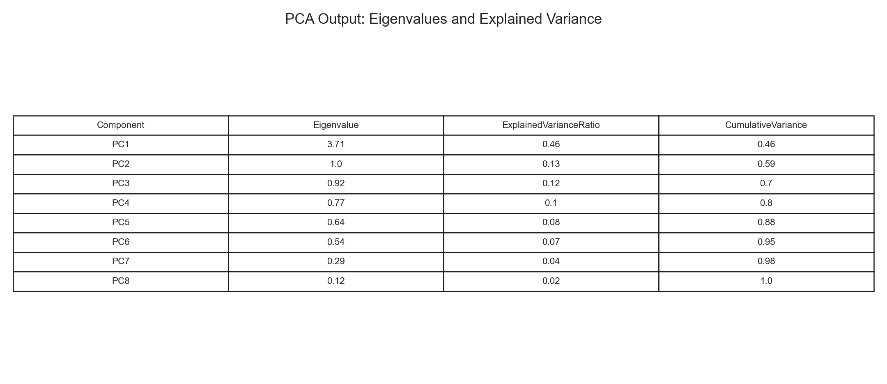

Principal Component Analysis (PCA) is a dimensionality reduction method that transforms many correlated variables into a smaller number of uncorrelated components while preserving as much variance as possible. In this project, PCA helps compress pollutant features into 2D and 3D views for visualization and clustering, and it also shows which directions in the data carry the most information.
I used pollutant measurements from the AQI dataset (PM2.5, PM10, NO2, CO, SO2, O3, NH3, NOx). The selected PCA frame contains quantitative features only, with missing values removed for these columns.

After selecting the quantitative columns, I normalized the data with StandardScaler so each feature has mean 0 and standard deviation 1.

PCA was run twice: first with 2 components (for a 2D projection) and then with 3 components (for a 3D projection).


| Setting | Variance Retained | Interpretation |
|---|---|---|
| 2 components | 58.90% | A strong compressed view for visualization, but some information is lost. |
| 3 components | 70.42% | More structure is retained and it works better for downstream clustering. |

The cumulative variance analysis shows that 7 components are required to retain at least 95% of the information in this PCA feature set.
The top three eigenvalues from the PCA output are approximately 3.7106, 1.0017, and 0.9216, indicating the first principal direction captures the largest share of variance.
